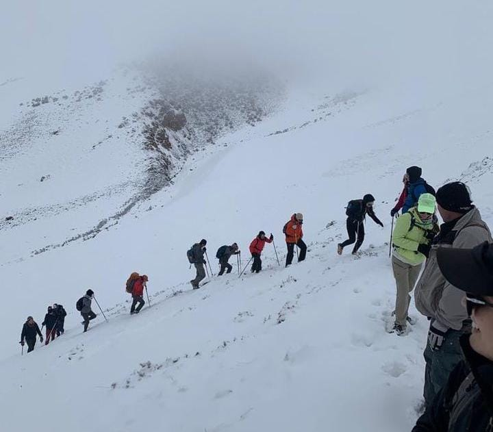
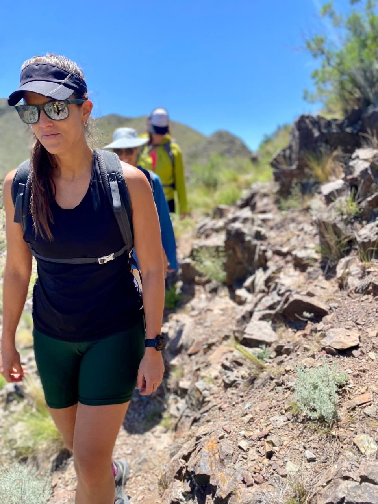
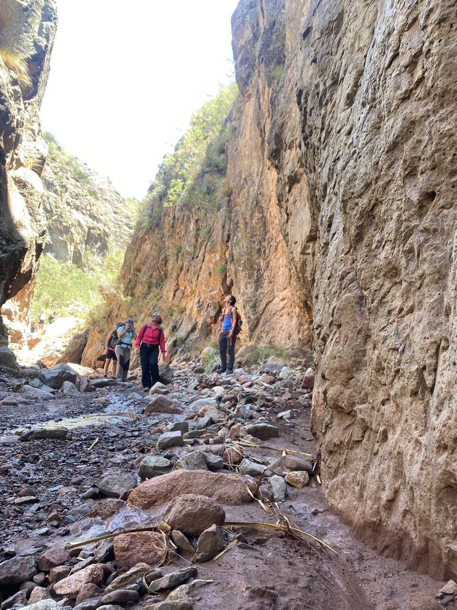
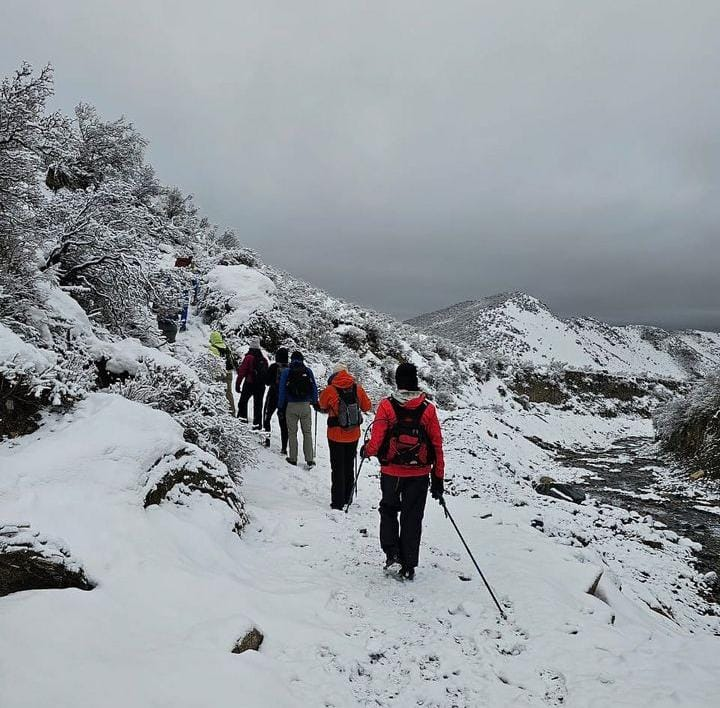
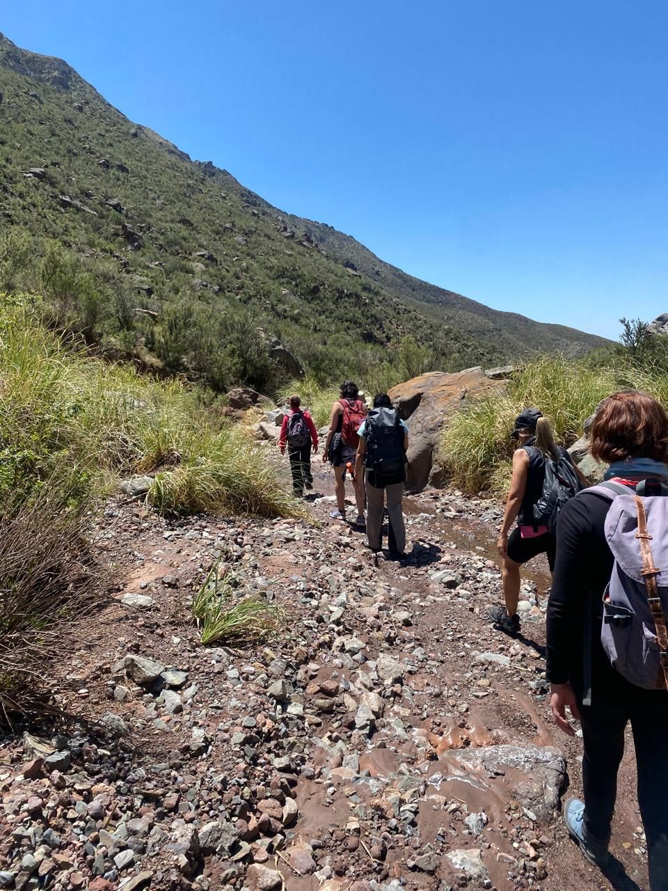
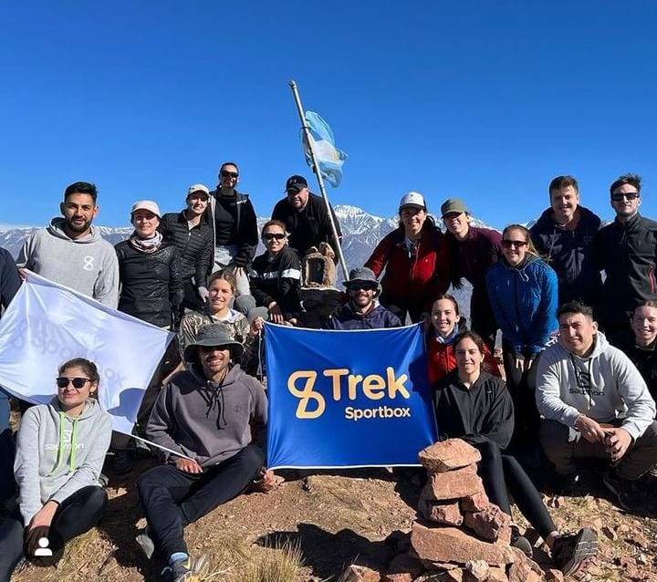
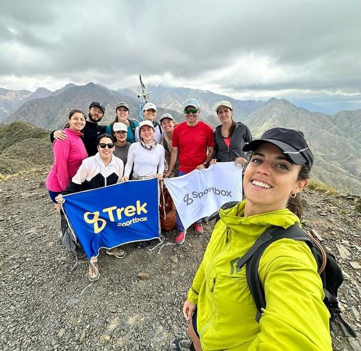
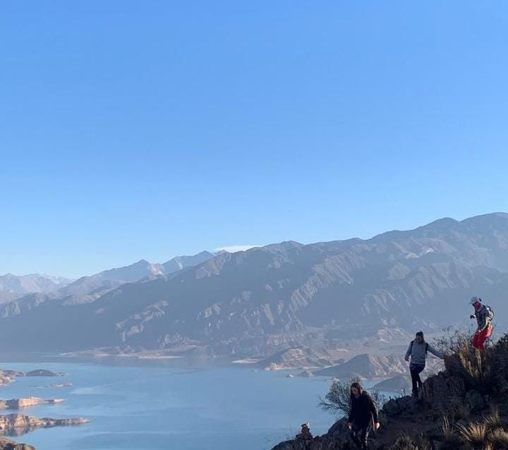

Cerro Aconcagua - 6,960 m

Cerro Fitz Roy - 3,405 m

Cerro Torre - 3,128 m

Cerro Champaquí - 2,790 m

Cerro Uritorco - 1,949 m

Cerro Tronador - 3,491 m

Cerro Catedral - 2,388 m

Cerro Piltriquitrón - 2,260 m
